Rules of the scavenger hunts: You may consult any source anywhere but please be sure to indicate where you got your information. And watch out for bad websites!
"A hypothesis or theory is clear, decisive, and positive, but it is believed by no one but the [person] who created it. Experimental findings, on the other hand, are messy, inexact things, which are believed by everyone except the [person] who did the work."
-- Harlow Shapley, "Through Rugged Ways to the Stars"
UAT2019 Scavenger Hunt #2: Interpreting spectra
2.0 Searching for galaxies using L-band wide observations for APPSS A major component of the UAT APPSS program includes observations with the Arecibo telescope to detect HI line emission from galaxies which, based on their optical properties in the Sloan Digital Sky Survey (SDSS) and Galaxy Explorer (GALEX) databases, are likely members of the supercluster or its immediate foreground/background. We'll talk about how we select targets for the HI observations later. For now, let us focus on how we conduct the Arecibo observations using the L-band wide receiver system. For this part of the exercise, review the WAPP search mode documentation. a. What does "WAPP" stand for?
b. How many WAPP boards are there?
c. In Scavenger Hunt #0, we reviewed the definition of redshift, z, in terms of wavelength; this relation Δλ/λ is sometimes referred to as the "optical" definition of redshift, while the "radio" expresses redshift in terms of Δf/f, where Δf is the difference between the rest and observed frequency of the line emission. In order to be consistent with redshift (or recessional velocity) measurements made at different wavelengths, we use the "optical" definition. Work out for yourself the relationship between z, fobs and frest under the optical definition.
d. In the WAPP "search mode", we divide the spectrometer into four quadrants, each of which produces a spectrum covering 25 MHz. Their center frequencies are offset one from the other by 20 MHz. Why do we overlap the frequency range of the quadrants?
e. In this setup, what at is the total velocity range of the combined WAPP coverage?
f. We refer to each frequency "pixel" as a "channel": there are 2048 channels for each 25 MHz. The center frequencies of each channel are spaced by a constant δf = 25 MHz/2048 channels. What does this imply for the separation of channels if we convert them to velocity units (km/s)?
2.1 Identifying signals in L-band wide spectra The APPS survey includes observations with the Arecibo telescope to detect HI line emission from galaxies which, based on their optical properties in the Sloan Digital Sky Survey (SDSS) and Galaxy Explorer (GALEX) databases, are likely members of the supercluster or its immediate foreground/background. We'll talk about how we select targets for the HI observations later. For now, let us focus on how we conduct the Arecibo observations using the L-band wide receiver system. Below are several examples of spectra obtained in the Fall 2015 observing run conducted under the APPSS Arecibo observing program A2982. Click on the spectrum to display a larger version in a new tab.
|
To the right are the four WAPP spectra obtained from the position switched observations of
the galaxy AGC 310858 displayed with the
horizontal axis in frequency units (top) and then velocity units (bottom). Here, the
ON and OFF-source spectra have been differenced and normalized and the calibration derived
from the CAL-ON/OFF sequence has been applied. In the frequency units plots,
there are interesting positive flux density signals (which we designate by letter)
at 1422.3 MHz (A), 1420.4 MHz (B), 1404 MHz (C),
1381 MHz (D); the 4th spectrum covering the lowest frequency range appears quite different.
Let's try to figure out what these spectra show. a. Identify each of the features A, B, C and D in the spectra shown in velocity units. Click here to see a larger version of the first WAPP spectrum, centered at 1415 MHz. b. How can you explain Feature A? c. What is feature B associated with and why does it appear to be show both positive and negative flux density? Click here to see a larger version of the third WAPP spectrum, centered at 1375 MHz. d. Feature D arises from well-known radio frequency interference (RFI). Check out Phil Perillat's list of RFI frequently seen at Arecibo and our own ALFALFA team RFI page. What is Feature D? e. Why isn't the transmitter responsible for the RFI at 1381 MHz on all the time? Hint: See our ALFALFA team RFI page. |

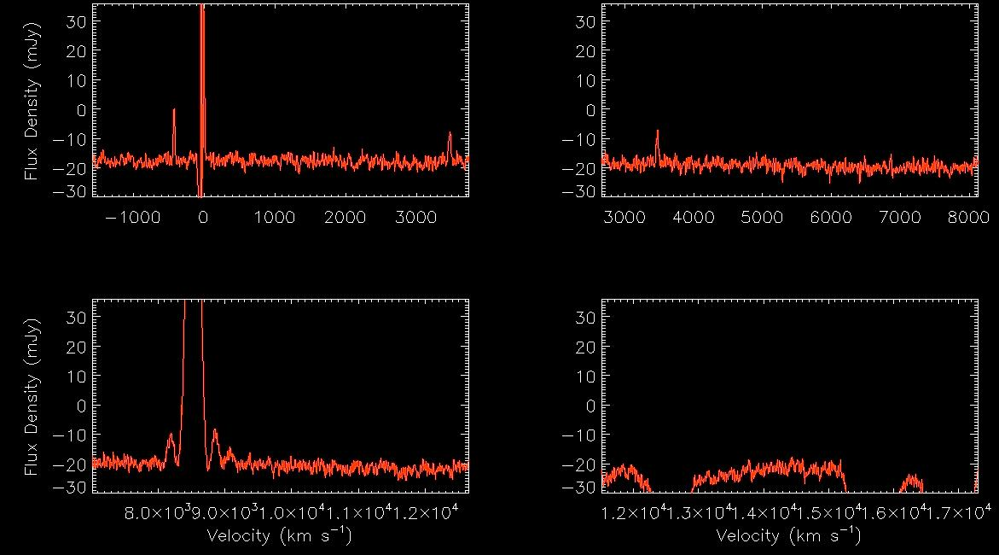 |
|
Because the RFI transmitter isn't on all the time, we can discard that portion of the
dataset when it is on to produce an RFI-free difference spectrum; because it contains fewer data records,
it will be noiser that one that contained a full 5 min-ON and 5 min-OFF source but it's better than the one contaminated
with the RFI or having no spectrum at all.
The spectrum to the right shows the result of forming the final spectrum after excising the
records with the RFI present.
f.
Was the transmitter associated with the 1381 MHz RFI on during the ON-source
or the OFF-source portion of the position-switched observations of AGC 310858? Click here to see a larger version of the fourth WAPP spectrum, centered at 1355 MHz. g. What RFI makes the fourth spectrum useless to us? |

|
h. We (finally!) identify Feature C with the target galaxy AGC 310858. Why does it appear in more than one spectrum?
Here are links to various useful public databases: SDSS DR 9, SDSS DR 12, DSS2 Blue, and NED. Be sure you understand what each site contains and how to use/interpret the information/images posted there. AGC 310858 2150403+283527 327.6679 28.5908 DR15Navi DSS2blu.03 NED1.0 i. What do you conclude about the nature, distance, morphology, stellar and gas content of AGC 310858?
2.2 Interpreting LBW spectra taken in APPSS search mode Use what you have learned above to interpret spectra of targets observed under Arecibo program A2982 in the fall of 2015 under the UAT APPSS program. Below are some of the spectra of AGC 335430, an APPSS target, as well as links to the optical databases as above. In all cases of the images, a larger version will open in a new window if you click on the spectrum
 |
 |
 |
 |
Keep in mind that stronger HI sources would have been detected in the ALFALFA survey, so most of the LBW targets should have relatively low integrated HI fluxes.
2.3 L-band spectra at Green Bank Tonight we will be observing with the GBT, searching for 21-cm emission from gas in a sample of very low surface brightness galaxies. Here is a link to the proposal we submitted to obtain the time. a. What receiver will we use? What is the bandwidth and the range in frequencies we willl search? What velocity range does this correspond to? b. We take 4 10-min ON-OFF observations of each source in this project and then "stack" them. Why do we need to observe these sources for so much longer than those we observed at Arecibo? What is the advantage of taking multiple observations rather than one long one? c. Here are spectra of LSBG-750, a galaxy you looked at in SH#1, obtained at the GBT on Feb 23, 2019. The first two plots show one 10-minute ON-OFF spectrum in frequency and velocity units. The second two plots show another on the same night. What features do you see in the spectra and can you identify what they might be?
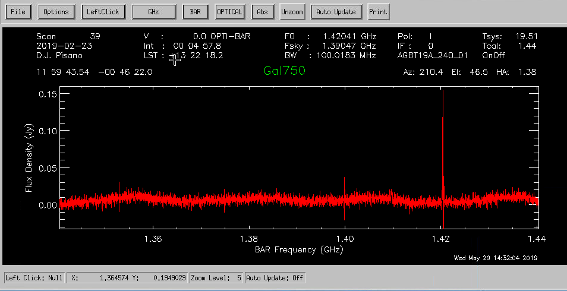

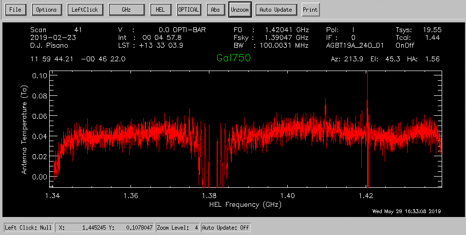
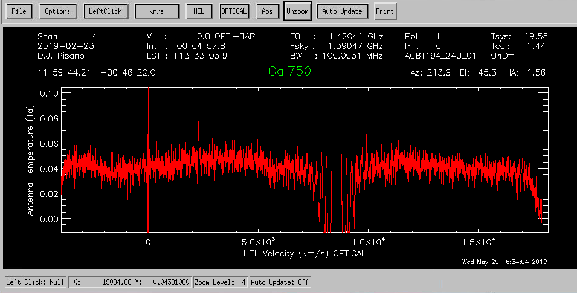
d. LSBG-750 was observed a total of 3 times on Feb 23, 2019. We can stack together the spectra to obtain a deeper exposure of the galaxy. The spectrum has been smoothed and the galaxy signal is shown in the last plot. What can you conclude about this galaxy?

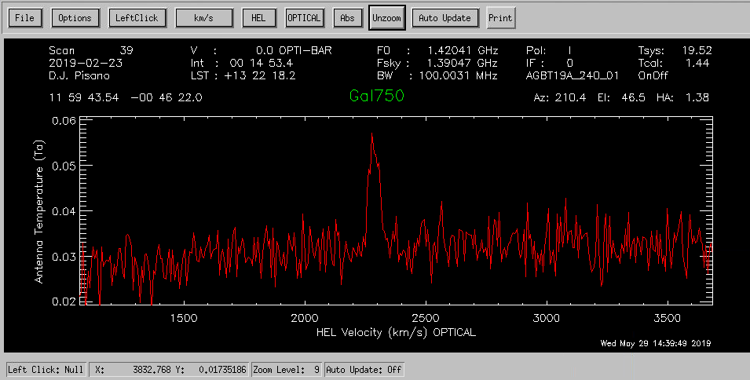
DR15Nav DSS2blu.03 NED1.0 e. The galaxy LSBG-748 was also observed 3 times on Feb 23, 2019. Below is the stacked spectrum. What can you conclude about this galaxy?

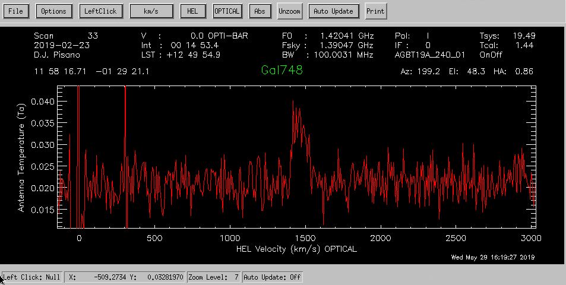
DR15Nav DSS2blu.03 NED1.02.4 Interesting LBW targets! In this part, you should investigate some interesting LBW spectra observed in our various LBW observing runs in the last few years. Each team is assigned an object to investigate. Your job is to use whatever methods/links you can to interpret the LBW spectrum and determine the nature of the extragalactic source detected by LBW. What can you tell us about the object assigned to your team? At the end of the day, each team will present its results (in 3 minutes or less total.... so SUMMARIZE!) Note: Clicking on the link to each spectrum will open it in a new tab. The teams and assignments have been shuffled from previous years to stimulate faculty anxiety.
| Team | AGC number | LBW Spectrum | Links | Notable information/conclusions/oddities/questions |
|---|---|---|---|---|
| A | 180545 | 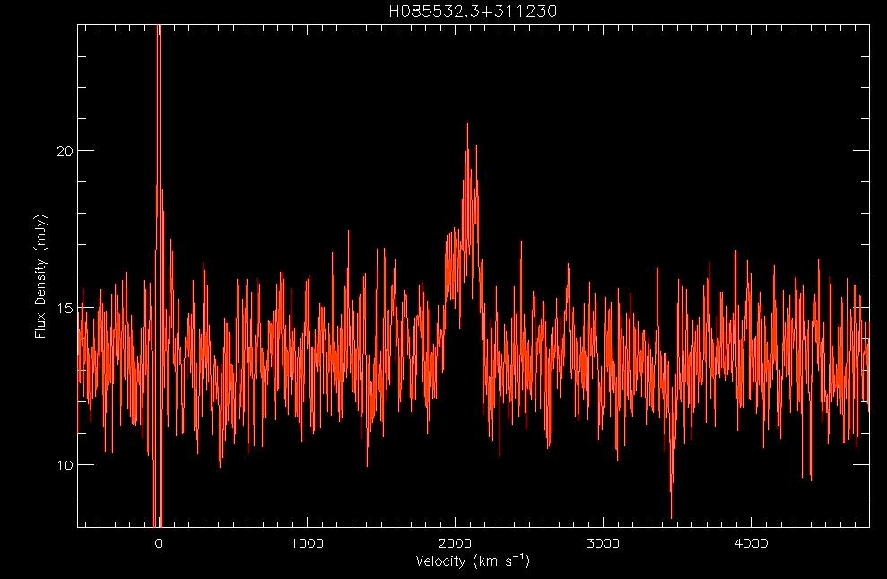 |
DR15Navi DSS2blu.03 NED1.0 | |
| B | 322050 | 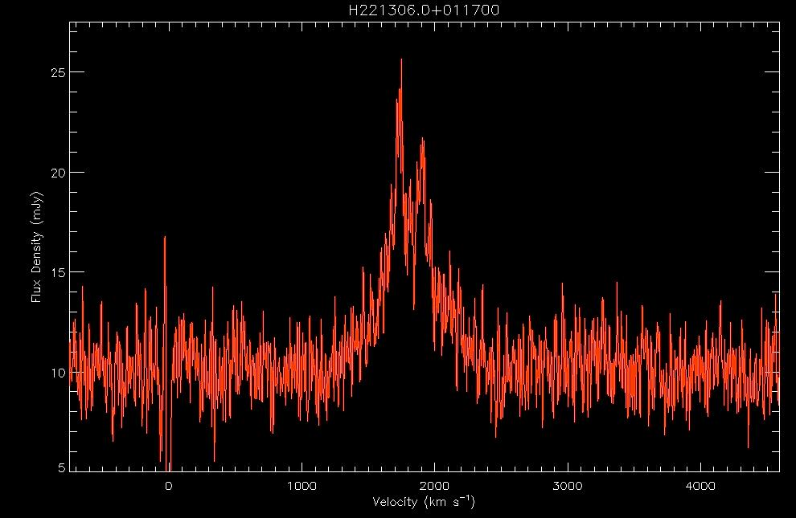 |
DR15Navi DSS2blu.03 NED1.0 | |
| C | 732152 | 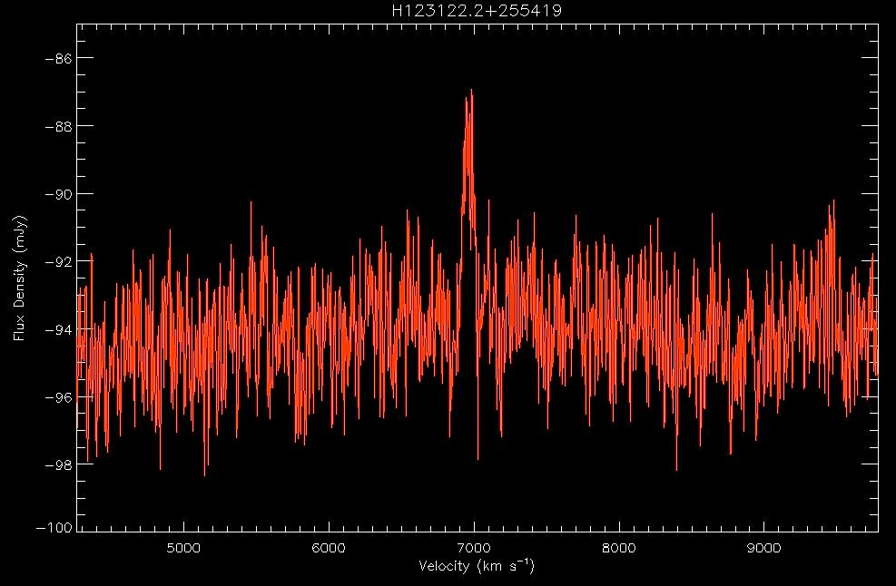 |
DR15Navi DSS2blu.03 NED1.0 | |
| D | 208583 | 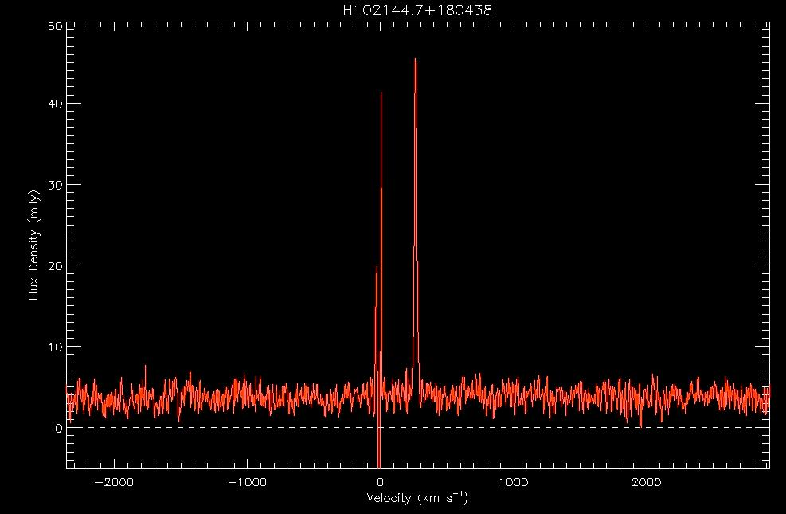 |
DR15Navi DSS2blu.03 NED1.0 |
|
| E | 229196 | 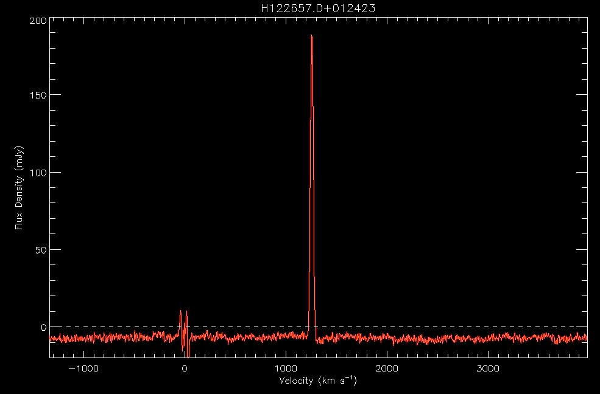 |
DR15Navi DSS2blu.03 NED1.0 | |
Here are additional objects to research! We will discuss these together, time-allowing.
| AGC number | LBW Spectrum | Links | Notable information/conclusions/oddities/questions |
|---|---|---|---|
| 223819 | 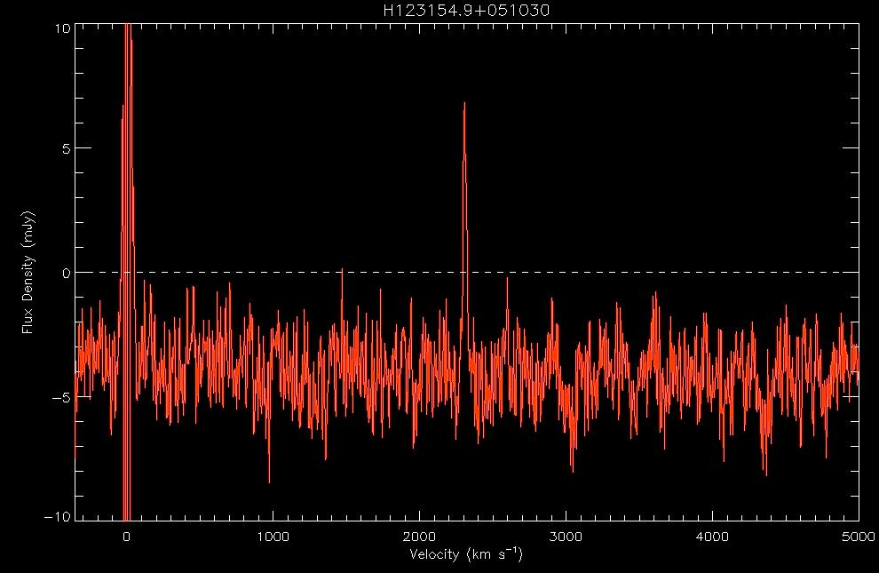 |
DR15Navi DSS2blu.03 NED1.0 | |
| 182595 | 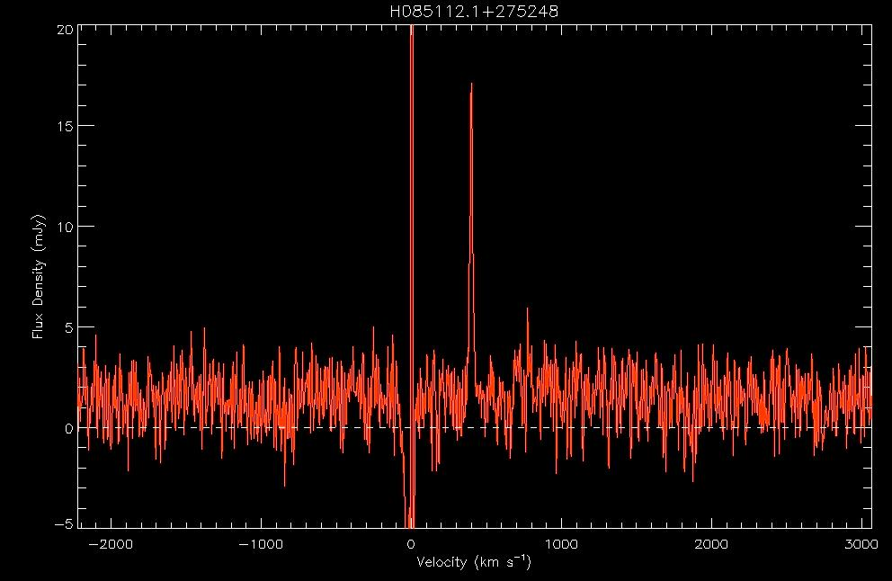 |
DR15Navi DSS2blu.03 NED1.0 | |
| 222391 | 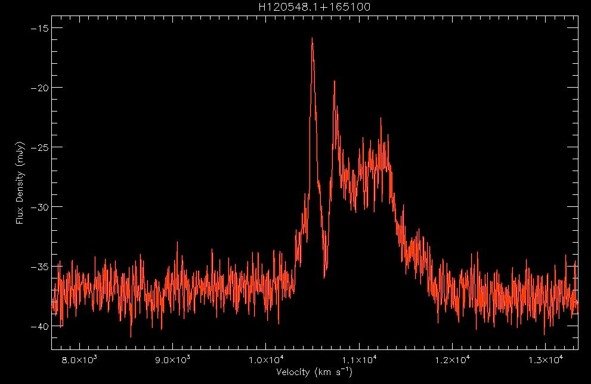 |
DR15Navi DSS2blu.03 NED1.0 | |
| 8847 | 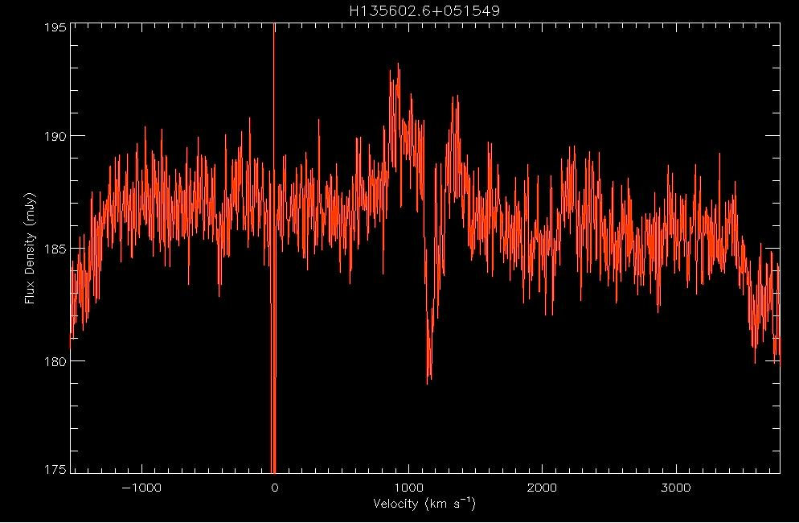 |
DR15Navi
DSS2blu.03 NED1.0 | |
| 193949 | 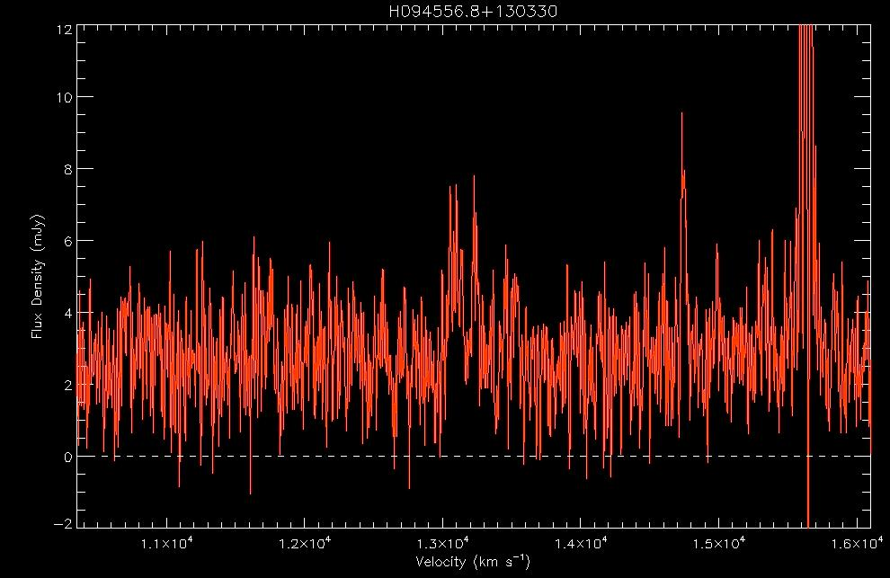 |
DR15Navi DSS2blu.03 NED1.0 | |
2.5 More (important) questions for the UAT in 2019: a. What former Arecibo atmospheric scientist is the author of the (classic) mystery novel "Murder at Arecibo"? b. What famous radio engineer played hockey at the University of Wisconsin in the 1920's? c. What telescope is named for Cornelius Calvin Sale Jr.? d. In what movie is it noted that the Parkes Telescope "remains a part of NASA missions to this day. And it's still in the middle of a sheep paddock"? e. When awakened from sleep by a superior officer who asked if he was indeed holding a teddy bear, what MASH character replied: "Uh, yes, sir. Regulations against having the real kind".
Last updated Fri Jun 14 07:31:59 EDT 2019 by becky